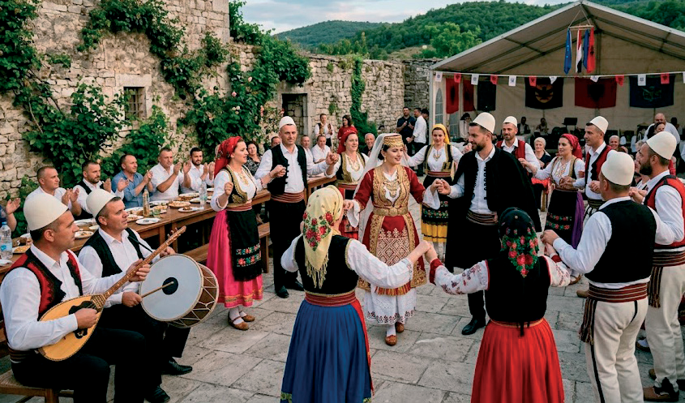
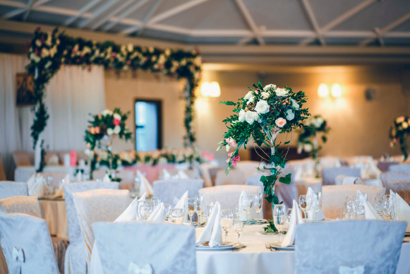

Traditat dhe trashëgimia jonë
Pjesëmarrja jonë në festë
Situata 1.
Buna, shoqja e klasës së Jonit dhe Drinit, kishte organizuar dasmën e motrës në shtëpinë e saj. Po martohej motra e saj dhe ajo kishte dëshirë të ftonte shokët dhe shoqet e klasës, që disa të mbanin fustanin e nuses e të tjerët lule.
Ajo, bashkë me prindërit e vëllezërit e saj, kishin përgatitur shtëpinë, duke zbukuruar dhomën e ndenjjes dhe kishin përgatitur ëmbëlsira e ushqime nga më të ndryshmet.
Ndërkohë që Joni po përgatitej për dasmë, nëna iu afrua dhe po i tregonte se sa e rëndësishme ishte që të respektonte familjen e Bunës dhe përgatitjet e tyre për dasmë. Nëna po tregonte se sa e rëndësishme ishte që ai të shkonte në orarin e caktuar te shtëpia e shoqes së tij. Ajo, gjithashtu, i tha se duhej të mendonte që t’i bënte edhe një dhuratë, e cila do ta gëzonte shumë atë, pasi të gjithë bëjnë dhurata në raste të tilla.
Sa gjëra të bukura mësoi Joni! Ai përjetoi emocione të shumta, të cilat nuk do t’i harrojë kurrë.
Dasmat dikur dhe sot

